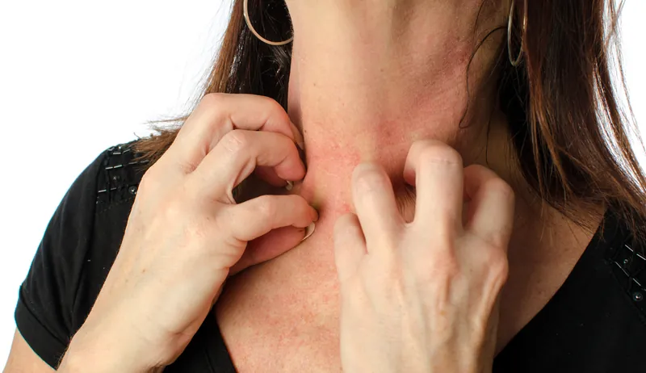
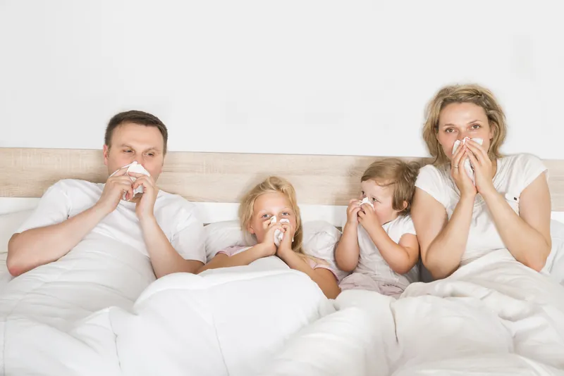

ORL, allergies, peau
J’accompagne enfants, adolescents et adultes pour leurs troubles ORL, respiratoires, asthme, allergiques et cutanés. Un suivi structuré pour respirer plus librement, apaiser la peau et retrouver une stabilité durable.

Quand les symptômes deviennent récurrents…
Otites, sinusites, eczéma, allergies, asthme… Souvent, les patients me disent qu’ils ont tout essayé, mais que les problèmes finissent toujours par revenir. Ou parfois, on en finit avec un eczéma et c’est un asthme ou un rhume des foins qui commence…
Ces troubles deviennent vite chroniques : ils fatiguent le corps, perturbent les nuits, et usent la patience de toute la famille. Mon rôle est de comprendre ce que le corps exprime et de proposer un suivi structuré, pour retrouver plus de stabilité et de confort au quotidien.

Une peau qui gratte, brûle ou s’irrite sans fin
La peau reflète souvent un déséquilibre plus profond. Quand les symptômes reviennent sans cesse, ils touchent le sommeil, la confiance en soi et la vie sociale.
- Eczéma : plaques rouges, démangeaisons, peau qui se fissure, sommeil perturbé.
- Psoriasis : plaques épaisses, sécheresse, inconfort permanent, gêne du regard des autres.
- Urticaire : boutons rouges, démangeaisons soudaines, poussées imprévisibles.
- Autres troubles cutanés chroniques : irritations, sécheresse, rougeurs persistantes.
Comment je peux vous aider
En homéopathie classique, la peau n’est jamais considérée isolément. Je cherche à comprendre ce que le terrain exprime, mais aussi les antécédents familiaux et le contexte émotionnel — un déclencheur ou facteur aggravant important, souvent négligé.
L’accompagnement peut permettre de réduire la fréquence et l’intensité des poussées, apaiser les démangeaisons, améliorer la qualité du sommeil et redonner confiance.
Ces allergies qui empoisonnent la vie
Avec l’arrivée du printemps, beaucoup redoutent les pollens, les éternuements en chaîne et les nuits sans repos. Ces allergies épuisent le corps, empêchent de se concentrer, et obligent parfois à vivre à l’intérieur.
- Rhinites allergiques : nez bouché ou qui coule sans cesse, éternuements répétés.
- Conjonctivites : yeux rouges, larmoyants, démangeaisons insupportables.
- Réactions aux acariens ou aux animaux : crises déclenchées dans l’environnement quotidien.
- Fatigue chronique liée à la lutte contre ces réactions répétitives.
Comment je peux vous aider
Mon suivi vise à travailler sur la réactivité globale de votre organisme, mais aussi à désensibiliser — un grand soutien pour prévenir les rechutes. L’objectif : atténuer l’intensité des réactions, rendre les saisons plus supportables, améliorer la respiration et la concentration.


Les infections ORL qui ne laissent aucun répit
Otites, angines, sinusites : quand elles se répètent, ces infections deviennent un vrai cercle vicieux et créent une dépendance aux traitements antibiotiques.
- Otites à répétition : douleurs intenses, fièvre, troubles du sommeil.
- Sinusites chroniques : maux de tête, nez bouché, fatigue persistante.
- Angines fréquentes : gorge douloureuse, fièvre, recours systématique aux médicaments.
- Rhinites récurrentes : nez constamment encombré, respiration difficile.
Comment je peux vous aider
L’homéopathie peut être un soutien efficace pour stabiliser le terrain et éviter que les infections ne reviennent sans cesse : renforcer progressivement la résistance de l’organisme, espacer les épisodes, réduire leur intensité.
Quand la respiration devient un combat au quotidien
Les troubles respiratoires comme l’asthme limitent la liberté de bouger, de jouer, de pratiquer un sport ou de passer une nuit sereine.
- Asthme : crises d’oppression, sifflements, peur de manquer d’air.
- Toux nocturne : réveils répétés, fatigue accumulée.
- Essoufflement rapide : difficultés à l’effort, impact sur la vie scolaire ou professionnelle.
- Inquiétude familiale : angoisse de voir l’enfant ou l’adulte en détresse respiratoire.
Comment je peux vous aider
L’homéopathie ne remplace jamais le traitement médical indispensable de l’asthme. Mais en complément, elle peut soutenir le terrain respiratoire, réduire certaines sensibilités aux déclencheurs, et améliorer la récupération et la qualité de vie.
Ce qui compte pour moi dans votre suivi ou celui de votre enfant
Une respiration plus libre, une peau apaisée ou des nuits sans toux : c’est retrouver une vie plus fluide, plus stable et plus sereine.
- Écouter toute l’histoire, pas seulement les symptômes visibles.
- Comprendre le terrain global (peau, ORL, respiration, énergie), en prenant en compte les antécédents familiaux et l’émotionnel.
- Proposer un suivi structuré, adapté à chaque patient.
- Ajuster étape après étape, dans la durée.
- Travailler en complémentarité avec le médecin traitant.
Ils ont retrouvé du confort
« Mon psoriasis recouvrait tout mon corps. Grâce à son écoute attentive et son interrogatoire précis, Mme Orlando a su identifier le déclencheur émotionnel à l’origine de mon psoriasis. Les crises se sont atténuées. Je peux enfin reporter des robes en été ! »
— Viviane, 46 ans · mars 2025« Chaque printemps, mes allergies me clouaient à la maison : yeux rouges, nez bouché, épuisement. Grâce au suivi sur le long terme avec Paola, les symptômes sont beaucoup moins forts. Je peux de nouveau profiter du printemps et de l’été. »
— Sophie, 34 ans · octobre 2024« Ma fille Léa se réveillait la nuit avec des crises d’asthme. Paola nous a accompagnées avec rigueur et douceur, toujours en lien avec le médecin. Les crises sont plus espacées, moins violentes, et Léa peut de nouveau courir et jouer. »
— Maman de Léa, 9 ans · janvier 2024« J’avais un eczéma depuis l’adolescence, au point de ne plus oser me montrer en manches courtes. Aujourd’hui, les poussées sont plus rares et beaucoup moins violentes. Je dors mieux et j’ai retrouvé confiance en moi. »
— Julie, 27 ans · novembre 2023« Mon fils faisait des otites tous les mois. Nous vivions au rythme des antibiotiques et des nuits blanches. Depuis son suivi, les otites se sont espacées, et il récupère plus vite. »
— Papa de Louis, 5 ans · février 2025Questions fréquentes
L’homéopathie peut-elle aider en cas d’eczéma ?
Oui. Elle peut réduire l’intensité des poussées, calmer les démangeaisons et améliorer la qualité du sommeil, en complément d’un suivi dermatologique.
Est-ce que l’homéopathie remplace le médecin, le pédiatre ou le dermatologue ?
Non. Mon rôle est complémentaire : je travaille toujours dans le respect du suivi médical.
L’homéopathie est-elle utile contre les allergies saisonnières (pollen, rhume des foins) ?
Oui. Elle permet d’atténuer la réactivité de l’organisme, de rendre les périodes de pollinisation plus vivables et de réduire la dépendance aux traitements symptomatiques.
L’homéopathie peut-elle accompagner l’asthme ?
Oui, toujours en complément du traitement prescrit par le médecin. Elle peut soutenir le terrain, réduire certaines sensibilités et améliorer la qualité de vie.
Peut-on consulter pour l’eczéma d’un bébé ou d’un adolescent ?
Oui, c’est une raison fréquente de consultation. Je cherche à comprendre le terrain global de votre enfant pour proposer un traitement individualisé, qui vise à apaiser les poussées et améliorer la qualité de vie, en complément du suivi dermatologique si nécessaire.
Peut-on être accompagné en cas de sinusites chroniques ?
Oui. Les sinusites à répétition fatiguent et diminuent la qualité de vie. L’homéopathie peut aider à diminuer la fréquence et l’intensité des crises, en travaillant sur le terrain global.
L’homéopathie peut-elle accompagner un psoriasis chez l’adulte ?
Oui. Le psoriasis n’est pas uniquement un problème de peau, c’est l’expression d’un terrain. Le suivi vise à réduire les poussées, apaiser l’inconfort et soutenir la confiance en soi.
Mon enfant a sans cesse le nez bouché, est-ce que l’homéopathie peut aider ?
Oui. Les rhinites chroniques ou récidivantes sont fréquentes chez les enfants. L’homéopathie peut aider à diminuer l’encombrement et améliorer la respiration au quotidien.
Peut-on consulter pour un adulte allergique aux animaux ou à la poussière ?
Oui. Les allergies ne concernent pas que les enfants. L’homéopathie peut accompagner aussi les adultes pour réduire la sensibilité aux allergènes et améliorer le confort de vie.
Et si on commençait ?
La première consultation permet de poser les bases d’un suivi structuré et individualisé. Je vous reçois à Pully/Lausanne et tous les jeudis à Fribourg.